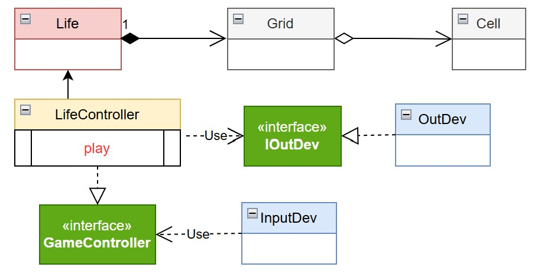

GIT repo:
https://github.com/MatteoBiancofiore/iss2026
GIT repo:
https://github.com/MatteoBiancofiore/iss2026
R1 Realizzare una versione in Java del gioco Life di Conway, come gioco zero-player.
Il gioco consiste nell’introdurre una Griglia di Celle il cui stato (cella ‘viva’ o cella ‘morta’)
evolve come stabilito dallle regole di ConwayLife
R2 L’utente umano deve poter:
- specificare la configurazione iniziale della griglia del gioco
- vedere l’evoluzione del gioco in forma opportuna
(si veda Problema della vista del gioco )
- fermare e far ripartire l’evoluzione del gioco
- pulire (a gioco fermo) la configurazione della griglia del gioco
Il requisito R1 è stato analizzato e formalizzato attraverso
l'identificazione delle entità principali del sistema, le loro
responsabilità e le operazioni che devono essere implementate per
soddisfare i requisiti funzionali del gioco.
Le entità
identificate sono: Cell, Grid, Life,
LifeController e OutDev. Ciascuna di queste entità è stata
definita attraverso un'interfaccia che specifica le operazioni che
devono essere implementate per soddisfare i requisiti funzionali del
gioco.
public interface ICell {
void setStatus(boolean v);
boolean isAlive();
void switchCellState();
}
public interface IGrid {
public int getRowsNum();
public int getColsNum();
public ICell getCell(int row, int col);
public void setCell(int row, int col, boolean state);
public boolean getCellStatus(int row, int col);
public void clear();
int getNeighborsNum(int row, int col);
}
public interface ILife {
IGrid getGrid();
void nextGen();
void show();
ICell getCell(int row, int col);
}
public interface ILifeController {
void switchCellState(int row, int col);
void onStart();
void onStop();
void onClear();
int getGeneration();
}
public interface IOutDev {
void displayGrid(IGrid grid);
}

La figura mostra l'analisi del problema, con le entità principali del sistema e le loro relazioni.
La scelta di adottare un approccio astratto per l'interfaccia permette al sistema di essere indipendente dal dispositivo di output, sia esso una console, una GUI, etc.
GIT repo:
https://github.com/MatteoBiancofiore/iss2026